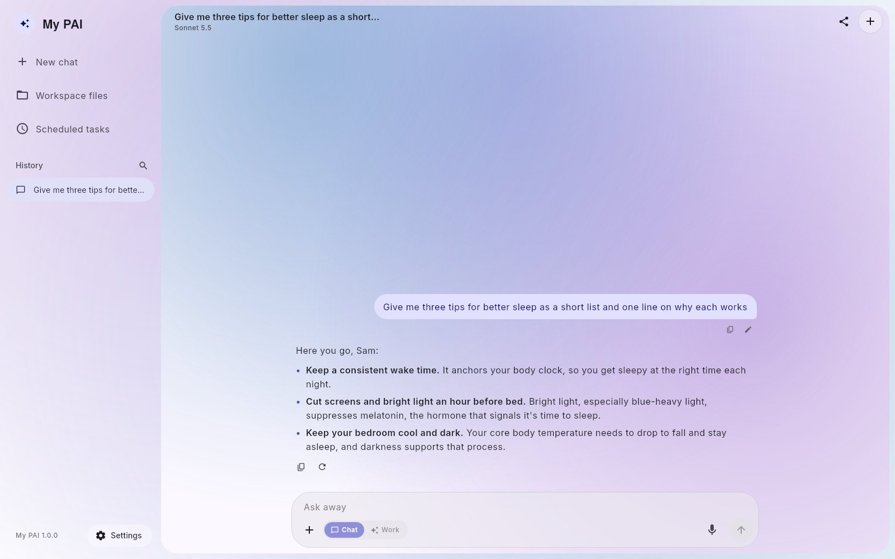
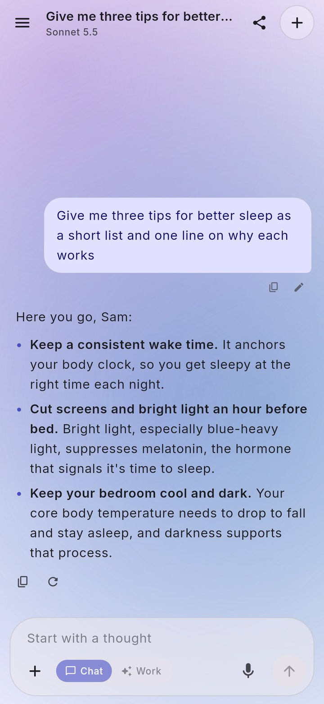
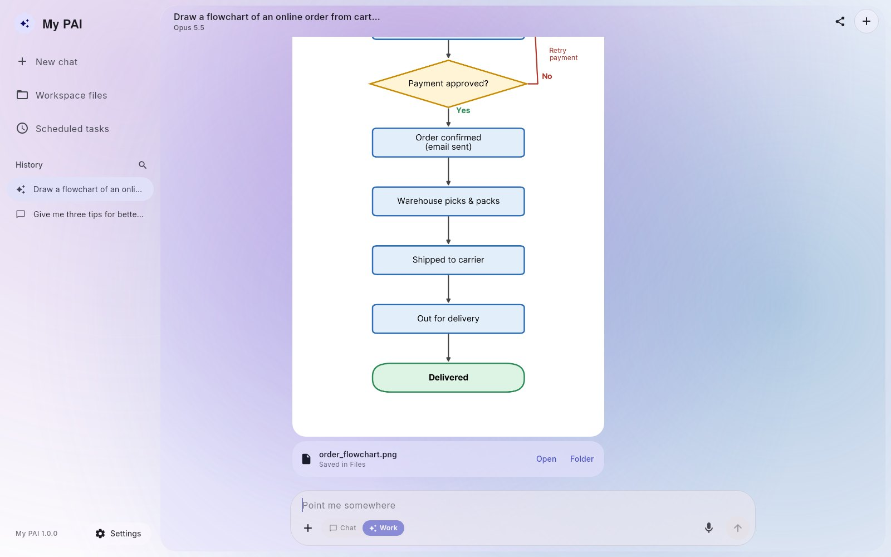
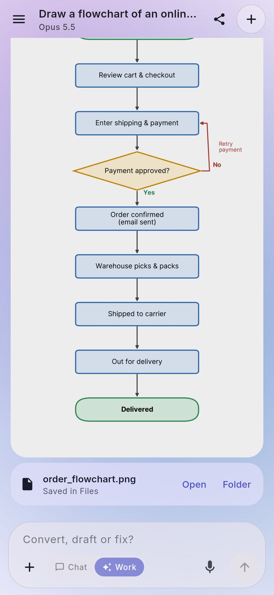
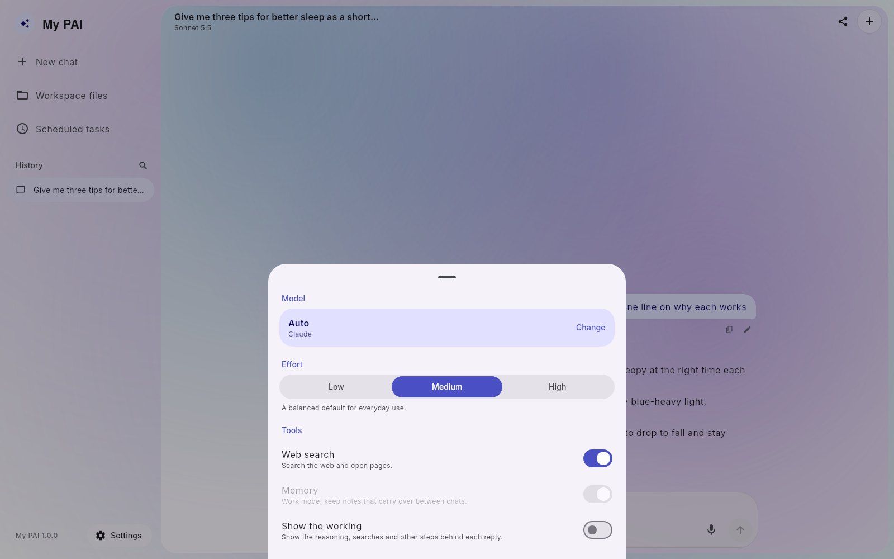
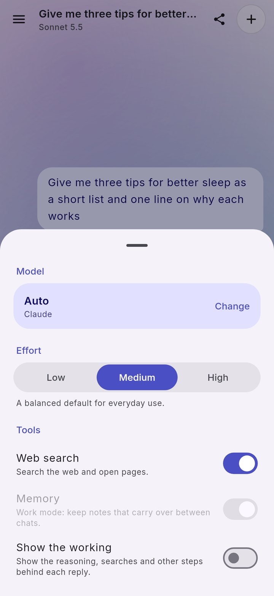

Your personal AI that gets on with it.
My PAI: chat, or hand over a piece of work. Your own keys, on every device.


Ask anything
Clear answers, with web search, images and PDFs.


Hand over the work
It plans, uses files, the web, GitHub and Gmail, and asks before it changes anything.


Any model, your keys
Claude, OpenAI, OpenRouter, Groq, Gemini and more. No account with us.


Every device
Android, Windows and Linux, in step through encrypted sync.
Yours alone
No ads, no tracking. Everything stays on your devices.
On a schedule
Set a task once and let it run by itself.
Open source
MIT licence. Read it, build it, change it.